생리통, 생리 전 불편, 주기 변화, 갱년기, 임신 준비와 출산 뒤 회복처럼 여성의 몸에는 달마다, 해마다 바뀌는 리듬이 있습니다. 좋은꿈참사랑한의원은 한방부인과 진료과목에서 불편한 증상과 함께 잠·소화·몸의 온기 같은 생활 리듬을 먼저 여쭙고, 산부인과 확인이 먼저 필요한 신호는 따로 안내합니다.

여성 건강, 쉬운 말로 하면
여성의 몸은 생리 주기, 임신과 출산, 갱년기를 지나며 리듬이 여러 번 바뀝니다. 같은 피로나 통증도 주기의 어느 때인지, 잠과 식사가 어떤지에 따라 모양이 달라질 수 있어 증상 하나만 떼어 보지 않고 생활 전체와 함께 살핍니다.
임신 준비와 출산 뒤 몸 돌보기
난임에는 여성과 남성 양쪽의 여러 요인이 관여합니다. 임신을 준비하는 분께는 생리 주기, 수면, 소화, 체온, 스트레스, 복용 중인 약과 기저질환을 함께 여쭙습니다. 원인을 확인하는 산부인과·비뇨의학과 검사는 함께 받으시길 권합니다.
출산 뒤에는 수면 부족, 아이를 안고 수유하는 반복 자세, 몸의 변화로 손목·허리·어깨가 아프기 쉽습니다. 수유 중이시면 꼭 말씀해 주세요. 한약은 약재별로 수유 중 안전성을 따져 봅니다. 열이 나거나 출혈이 많거나 가슴 통증이 심하면 산부인과 진료가 먼저입니다.
동작구 한의약 난임치료 지원사업 등 보건소 사업은 대상과 신청 방법이 해마다 달라질 수 있어 방문 전 전화로 확인해 주세요.
자주 듣는 이야기
진료실에서 자주 듣는 이야기는 이렇습니다.
- 생리 때마다 아랫배가 차고 아파 일상이 힘들다
- 생리 며칠 전부터 예민해지고 몸이 붓는다
- 체중이 바뀐 뒤로 주기가 불규칙해졌다
- 잠들 무렵 열이 오르고 땀이 나서 자주 깬다
- 출산 뒤 아이를 안다 보니 손목과 허리가 아프다
- 일과 육아를 함께 하며 늘 지쳐 있다
먼저 이렇게 여쭙니다
불편한 증상과 함께 주기와 생활을 일상의 말로 여쭙니다.
- 마지막 생리 시작일과 주기, 양, 통증 정도
- 불편함이 주기의 어느 때에 심해지는지
- 잠, 소화, 손발과 아랫배의 온기
- 임신 가능성과 임신 준비 여부, 복용 중인 약과 호르몬제
- 최근 건강검진이나 산부인과 검사 결과
일상에서 먼저 해 볼 수 있는 것
- 달력이나 앱에 주기와 통증, 기분 변화를 두세 달 적어 보기
- 생리 기간에는 배와 허리를 따뜻하게 하고 찬 음료 줄이기
- 잠드는 시각을 일정하게 맞추고 늦은 밤 화면 보는 시간 줄이기
- 끼니를 거르지 않고 가볍게 걷는 시간 만들기
- 진통제를 먹는다면 먹은 날짜와 양을 함께 적어 두기
한의원에서 함께 살필 수 있는 경우
생리통이나 생리 전 불편이 반복되는 경우, 갱년기 무렵 잠과 열감이 함께 흔들리는 경우, 임신을 준비하며 생활 리듬을 점검하고 싶은 경우에 몸의 온기와 소화, 잠을 함께 살핍니다.
진찰 후 필요하다고 판단될 때 침, 온열, 한약 상담 등을 상태에 맞게 이어서 씁니다. 한약은 진단과 상담을 거친 뒤에 처방하며, 임신 가능성이 있으면 반드시 먼저 알려 주셔야 합니다.
먼저 산부인과 등 확인이 필요한 신호
아래와 같은 경우는 한의원보다 산부인과, 비뇨의학과, 응급실 확인이 먼저입니다. 이미 받고 있는 치료와 약은 임의로 중단하지 않습니다.
- 생리 기간이 아닌데 출혈이 있거나, 폐경 뒤 다시 출혈이 있을 때
- 갑자기 심한 아랫배 통증이나 열이 날 때
- 임신 가능성이 있으면서 복통이나 출혈이 있을 때
- 가슴에 멍울이 만져지거나 유두 분비물이 있을 때
- 소변에 피가 보이거나 열과 옆구리 통증이 함께 있을 때
좋은꿈참사랑한의원 진료는 이렇게 진행됩니다
접수, 상담, 진찰, 치료, 귀가 전 안내 순서로 진행합니다. 생리 중에도 진료를 받을 수 있으며, 그날 컨디션을 미리 알려 주시면 진료 방법을 정하는 데 참고합니다. 다시 오시면 지난번 이야기부터 이어서 여쭙습니다.
상도동·노량진에서
상도동과 노량진, 장승배기 일대에는 일과 육아를 함께 하거나 시험을 준비하며 생활 리듬이 쉽게 흔들리는 분들이 많습니다. 좋은꿈참사랑한의원은 7호선 상도역 3번 출구에서 약 200m 거리(서울 동작구 만양로2길 2 신성빌딩 3층·5층 (상도동))에 있고, 평일은 오후 8시까지, 토·일·공휴일은 오후 3시까지 진료해 퇴근 뒤나 주말에도 들를 수 있습니다.
자주 묻는 질문
생리 중에도 한의원 진료를 받을 수 있나요?
네, 받을 수 있습니다. 생리 시작일과 양, 통증 정도를 미리 알려 주시면 그날 상태에 맞춰 진료 방법을 정합니다.
생리통이 심한데 한의원에서는 무엇을 보나요?
통증이 언제 시작해 얼마나 이어지는지, 아랫배와 손발의 온기, 잠과 소화를 함께 여쭙습니다. 통증이 갑자기 심해졌다면 산부인과 확인을 먼저 권합니다.
갱년기 증상으로 잠을 설치는데 상담할 수 있나요?
네. 열감과 땀이 나는 시간대, 잠에서 깨는 횟수, 기분 변화를 함께 살핍니다. 호르몬제를 드시고 있다면 꼭 알려 주세요.
임신을 준비 중인데 한약을 먹어도 되나요?
한약은 진단과 상담을 거친 뒤에 처방하며, 임신 준비 중이거나 임신 가능성이 있으면 반드시 먼저 알려 주셔야 합니다. 복용 중인 영양제와 약도 함께 말씀해 주세요.
수유 중에 침을 맞아도 되나요?
대부분 가능합니다. 수유 중이라는 것과 지금 몸 상태를 먼저 확인한 뒤 진행합니다.
시험관 시술 중에도 한의원 진료를 받을 수 있나요?
시술 일정과 복용 중인 약을 알려 주시면 함께 진료를 받아도 되는지 신중하게 판단합니다. 담당 산부인과 일정과 지시를 먼저 따라 주세요.
동작구 한의약 난임치료 지원사업은 어디서 확인하나요?
사업 대상과 신청 방법은 보건소 기준에 따르고 해마다 달라질 수 있습니다. 동작구보건소나 한의원에 방문 전 전화(02-815-7510)로 확인해 주세요.
출산 뒤 손목과 허리가 아픈데 언제 가면 되나요?
출산 뒤 몸 상태와 수유 여부, 아픈 동작을 먼저 여쭙습니다. 산후 검진 결과가 있으면 가져오시고, 수유 중이면 꼭 알려 주세요.
방광염처럼 소변이 불편할 때 한의원에 가도 되나요?
소변에 피가 보이거나 열, 옆구리 통증이 있으면 먼저 비뇨의학과나 내과 진료를 받으세요. 검사 뒤에도 반복되는 불편과 생활 리듬은 한의원에서 함께 살필 수 있습니다.
주말에도 여성 진료를 받을 수 있나요?
토요일·일요일·공휴일은 오전 9시 30분부터 오후 3시까지 진료합니다. 방문 전 네이버 예약이나 전화(02-815-7510)로 확인해 주세요.
감수: 좋은꿈참사랑한의원 대표원장 이종호 · 마지막 확인 2026-11-26 · 일반적인 건강 정보이며 진단·치료를 대신하지 않습니다.
여성 건강 글 모아 보기 (98편)

질염 검사는 괜찮다는데 외음부가 가렵고 따가울 때는 무엇을 살피나요?
질염 검사에서 균이 없다는데 외음부가 계속 가렵고 따끔거리면 답답하고 말하기도 어렵습니다. 감염이 아닌 외음부 가려움과 통증의 흔한 이유, 피부 자극과 건조, 생활에서 줄일 수 있는 자극, 한의원에서 함께 살피는 부분을 정리했습니다.
수정 2026-11-26

자궁근종이나 자궁선근증이 있다고 들었을 때 한의원에서는 무엇을 함께 살피나요?
자궁근종·자궁선근증은 산부인과 진단과 추적 검사가 기준이고, 한의원에서는 생리통·출혈량·피로·잠·소화를 함께 살핍니다. 정기 추적 검사는 산부인과와 이어 갑니다.
수정 2026-11-26

기침할 때 새거나 화장실까지 참기 힘든 요실금, 복압성과 절박성은 어떻게 나눠 살피나요?
재채기나 줄넘기에 소변이 새는 복압성 요실금과, 갑자기 마려워 참지 못하는 절박성 요실금은 살피는 방향이 다릅니다. 두 갈래를 나눠 보고 골반바닥 운동, 배뇨 일기, 물과 카페인, 몸의 냉기를 함께 살피는 방법을 정리했습니다.
수정 2026-11-26

중고등학생 딸이 생리 때마다 배를 움켜쥐고 학교를 힘들어할 때(청소년 생리통)는 어떻게 살피나요?
초경 뒤 몇 해 사이 생리통이 심해져 수업에 집중하기 어려운 청소년이 많습니다. 흔한 생리통과 검사가 필요한 생리통의 차이, 진통제와 생활 관리, 보호자가 함께할 것, 한의원에서 살피는 부분을 정리했습니다.
수정 2026-11-26

생리를 시작한 뒤 쉽게 지치고 어지러운 여학생, 청소년 빈혈은 어떻게 살피나요?
생리를 시작한 여학생은 자라는 몸과 매달 빠져나가는 피 때문에 철분이 부족해지기 쉽습니다. 피로와 어지럼, 집중력 저하로 드러나는 청소년 빈혈을 어떻게 알아보고, 식사와 생활, 한의원 진료를 함께 살피는지 정리했습니다.
수정 2026-11-26
시험관 시술에서 착상 실패가 반복될 때 몸과 마음은 어떻게 살피나요?
좋은 배아를 이식했는데도 착상이 되지 않는 일이 반복되면 몸도 마음도 크게 지칩니다. 난임 병원의 검사와 계획을 기준으로 두고, 다음 시도 사이에 잠·식사·체력·마음을 어떻게 돌볼지, 한의원에서 함께 살피는 부분을 정리했습니다.
수정 2026-11-26

질염이 자꾸 반복되고 냉·대하가 신경 쓰일 때는 무엇을 살피나요?
냉은 주기에 따라 달라지는 정상 분비물이지만, 냄새·색·가려움이 함께 바뀌면 질염일 수 있어 산부인과 확인이 먼저입니다. 질염이 반복될 때 한의원에서는 피로·잠·소화·생활 습관을 함께 살핍니다.
수정 2026-11-26
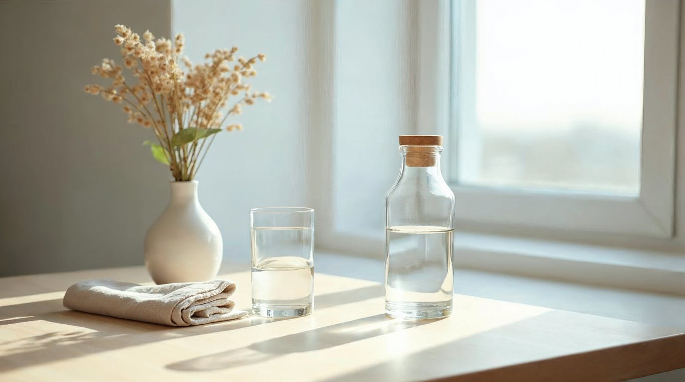
방광염이 자꾸 재발할 때는 무엇을 확인하고, 재발 사이의 몸은 어떻게 살피나요?
항생제를 먹고 가라앉았던 방광염이 몇 달 만에 또 찾아오면 지치고 불안해집니다. 재발이 잦은 까닭과 소변 검사의 의미, 물·배뇨 습관·몸의 냉기와 피로를 함께 살피며 재발 사이를 돌보는 방법을 정리했습니다.
수정 2026-11-26
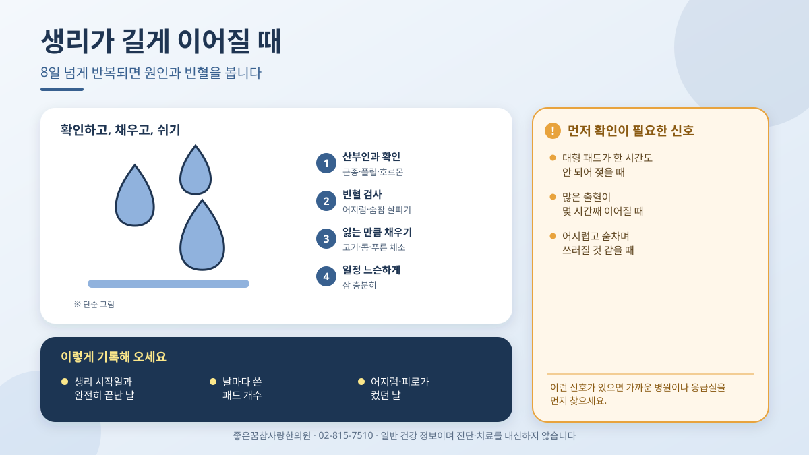
생리가 열흘 가까이 길게 이어지거나 끝 무렵 갈색 피가 오래 비칠 때는 무엇을 살피나요?
생리가 8일 넘게 이어지거나 끝 무렵 갈색 피가 오래 비치면 근종·폴립·호르몬 흔들림·갑상선·약의 영향을 먼저 확인합니다. 산부인과 확인과 함께 빈혈, 피로, 잠과 생리 리듬을 한의원에서 어떻게 살피는지 정리했습니다.
수정 2026-11-26

아이를 갖고 싶어 진료를 받을 때 한의원에 무엇을 알려야 하나요?
임신을 준비하며 오실 때는 월경 주기와 오늘이 주기의 어디쯤인지, 시도 기간, 산부인과 검사 결과, 복용 약과 영양제를 알려 주세요. 검사는 산부인과에서 함께 받고, 한의원은 임신을 약속하지 않고 두 분의 생활 리듬을 살핍니다.
수정 2026-11-26
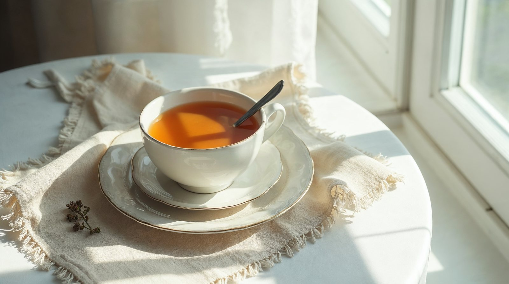
생리 전 증후군(PMS)으로 생리 일주일 전마다 몸과 마음이 흔들릴 때는 무엇을 살피나요?
생리 전 증후군은 생리 1~2주 전부터 붓기, 가슴 통증, 예민함, 식욕 변화가 반복되다 생리가 시작되면 가라앉는 흐름입니다. 두세 달 기록으로 주기와 증상의 짝을 확인하고, 잠·소화·몸의 온도를 함께 살핍니다.
수정 2026-11-26

생리 전만 되면 식욕이 폭발하고 단 음식이 당길 때는 무엇을 살피나요?
생리 일주일 전이면 초콜릿과 빵, 야식이 자꾸 당겨 스스로를 탓하는 분이 많습니다. 생리 전 식욕이 커지는 이유, 감정적 폭식과 구분할 점, 끼니와 잠으로 당김을 다루는 방법, 한의원에서 함께 살피는 부분을 정리했습니다.
수정 2026-11-26
임신 중 발과 다리가 붓는 부종은 어디까지 흔하고, 생활에서는 어떻게 살피나요?
임신 중기 이후 저녁마다 발목과 종아리가 붓는 것은 흔한 변화지만, 갑자기 얼굴과 손까지 붓는 것은 따로 확인이 필요합니다. 흔한 부종과 살필 부종을 나누는 법, 생활 관리와 한의원 진료를 정리했습니다.
수정 2026-11-26

감기도 아닌데 임신 중 코가 계속 막힐 때(임신성 비염)는 무엇을 살피고 어떻게 지내나요?
임신 중에는 호르몬과 늘어난 혈액량 때문에 코 점막이 부어 감기가 아닌데도 몇 주씩 코가 막힐 수 있습니다. 감기·알레르기 비염과의 차이, 코 세척과 잠자리 습관, 약을 상의하는 방법을 정리했습니다.
수정 2026-11-26

임신 중 입덧이 심할 때는 하루를 어떻게 지내고, 한의원에는 무엇을 알려야 하나요?
입덧은 임신 초기에 흔한 메스꺼움과 구토로, 대개 임신 중기 무렵 줄어드는 경우가 많습니다. 한약·침은 임신 사실을 먼저 알리고 산부인과와 상의합니다.
수정 2026-11-26

임신 중 허리와 골반, 치골이 아플 때는 무엇을 살피고 생활은 어떻게 하나요?
임신 중 허리 통증과 골반대 통증(치골·엉덩이 뒤쪽)은 배가 커지고 인대가 느슨해지며 흔히 생깁니다. 아픈 자리와 동작을 나눠 보고, 진료 전 임신 주수를 먼저 알리며 산부인과와 상의합니다.
수정 2026-11-26
임신 중 밤마다 종아리에 쥐가 나서 깰 때는 무엇을 살피고 어떻게 풀어 주나요?
임신 중기 이후 밤에 종아리가 뒤틀리듯 뭉쳐 깨는 다리 쥐는 흔한 불편입니다. 쥐가 났을 때 푸는 법, 잠들기 전 스트레칭과 생활 관리, 따로 확인할 다리 통증과 한의원에서 함께 살피는 점을 정리했습니다.
수정 2026-11-26

임신 중 배와 온몸의 피부가 가려울 때는 무엇을 살피고, 일상에서는 어떻게 하나요?
임신 중에는 배가 늘어나며 피부가 당기고 건조해지거나 호르몬 변화로 가려움이 잦아질 수 있습니다. 가려운 자리와 시간, 발진 모양을 어떻게 나눠 살피고 보습과 옷, 잠은 어떻게 챙기는지 정리했습니다.
수정 2026-11-26

임신 중 밤에 잠이 오지 않거나 자주 깰 때는 무엇을 살피고 어떻게 지내나요?
임신 중에는 호르몬 변화, 잦은 소변, 커지는 배, 다리 쥐와 속쓰림, 출산 걱정이 겹쳐 잠이 얕아지기 쉽습니다. 시기별로 잠을 흔드는 이유와 잠자리 요령, 한의원에서 함께 살피는 점을 정리했습니다.
수정 2026-11-26

임신 중 속쓰림과 신물이 올라오는 역류는 왜 생기고, 일상에서는 어떻게 줄이나요?
임신 중에는 호르몬과 커지는 자궁 때문에 위산이 올라오기 쉬워 속쓰림과 신물이 흔해집니다. 식사와 잠자리 요령, 약은 어떻게 상의하는지, 따로 확인할 윗배 통증과 한의원에서 함께 살피는 점을 정리했습니다.
수정 2026-11-26
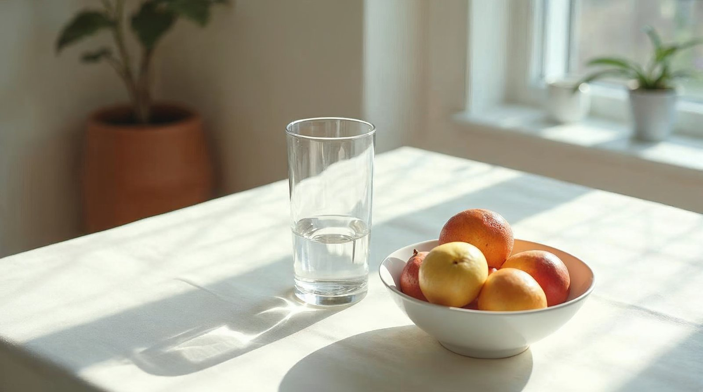
임신 중 두통이 잦아졌을 때는 무엇을 살피고, 약은 어떻게 상의하나요?
임신 중에는 호르몬 변화, 커피를 줄인 것, 짧은 잠, 늘어난 혈액량 때문에 두통이 잦아질 수 있습니다. 약을 함부로 먹기 어려운 시기에 두통의 모양과 혈압을 어떻게 살피고 생활은 어떻게 꾸리는지 정리했습니다.
수정 2026-11-26

임신 중 새벽마다 손이 저리고 손목이 뻣뻣할 때(임신 중 손목터널증후군)는 어떻게 살피나요?
임신 중에는 몸에 물이 고이며 손목 안쪽 통로가 좁아져 새벽에 손이 저리고 아침에 손가락이 뻣뻣해질 수 있습니다. 저림의 자리와 시간, 붓기를 어떻게 살피고 손목은 일상에서 어떻게 아끼는지 정리했습니다.
수정 2026-11-26

임신 중 소변이 자주 마렵고 밤에도 화장실 때문에 깰 때는 무엇을 살피고 어떻게 지내나요?
임신 중에는 호르몬과 혈액량, 커지는 자궁 때문에 소변이 자주 마려운 일이 흔합니다. 자연스러운 빈뇨와 방광염 같은 감염을 나누는 법, 물을 줄이지 않고 밤잠을 지키는 생활 요령, 한의원에서 함께 살피는 부분을 정리했습니다.
수정 2026-11-26
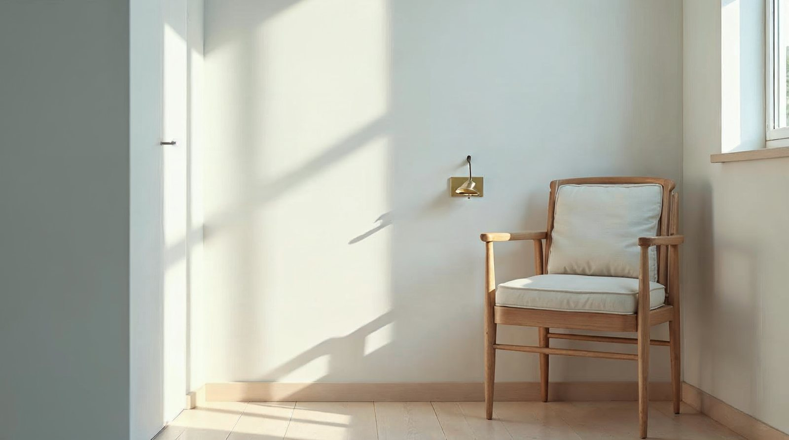
임신 중 일어설 때나 오래 서 있을 때 핑 도는 어지럼은 왜 생기고, 어떻게 살피나요?
임신 중에는 혈관이 넓어지고 혈액량과 혈당의 흐름이 달라져 일어설 때나 오래 서 있을 때 어지럼이 흔해집니다. 빈혈·저혈압·공복과 어떻게 나눠 보는지, 일상에서 줄이는 방법과 한의원에서 살피는 부분을 정리했습니다.
수정 2026-11-26
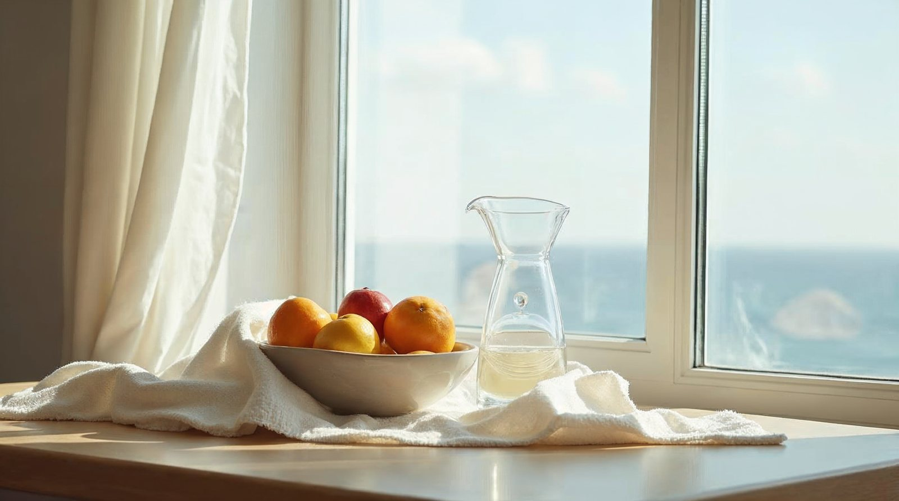
임신 중 변비가 심해졌을 때는 무엇을 먼저 살피고, 일상에서는 어떻게 하나요?
임신 중에는 호르몬과 커지는 자궁, 철분제 때문에 장이 느려져 변비가 흔해집니다. 물과 식사, 화장실 습관, 철분제 상의법과 한의원에서 함께 살피는 점, 먼저 확인할 신호를 정리했습니다.
수정 2026-11-26

임신 중 감기에 걸려 기침과 콧물이 이어질 때는 어떻게 지내고, 약은 어떻게 상의하나요?
임신 중에는 코 점막이 붓고 면역 반응이 달라져 감기가 오래가고 기침이 남기 쉽습니다. 약은 산부인과와 상의하는 것을 바탕으로 집에서 할 수 있는 관리와 한의원에서 함께 살피는 점을 정리했습니다.
수정 2026-11-26
임신 중 빈혈이라는 말을 듣고 어지럽고 숨이 찰 때, 철분제와 식사는 어떻게 챙기나요?
임신 중에는 혈액량이 늘고 아기에게 철분이 많이 가면서 빈혈이 생기기 쉽습니다. 철분제를 속 편하게 이어 가는 요령과 식사, 어지럼이 올 때의 생활 습관, 한의원에서 함께 살피는 부분을 정리했습니다.
수정 2026-11-26
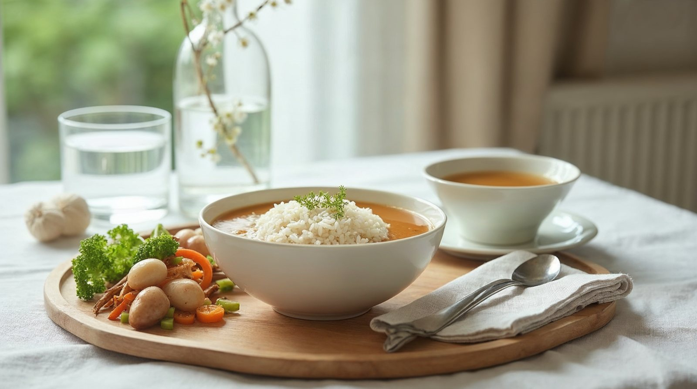
출산 뒤 몸무게가 잘 빠지지 않을 때, 산후 체중 관리는 언제부터 어떻게 하나요?
출산하고 몇 달이 지나도 몸무게가 그대로면 조급해지기 쉽습니다. 산후 체중이 왜 더디게 빠지는지, 수유와 잠, 회복 시기를 고려해 언제부터 무엇을 바꾸면 좋은지, 한의원에서 함께 살피는 부분을 정리했습니다.
수정 2026-11-26

출산 뒤 얼굴과 손발이 퉁퉁 붓는 산후 부기는 언제까지 가고, 어떻게 살피나요?
출산하고 나면 붓기가 금방 빠질 줄 알았는데 손가락이 굽혀지지 않고 발등이 퉁퉁 부어 당황스럽습니다. 산후 부기가 왜 생기고 언제쯤 빠지는지, 먼저 확인할 신호와 생활에서 챙길 것을 정리했습니다.
수정 2026-11-26
출산 뒤 몸 회복, 관절·땀·잠·기분은 무엇부터 살피나요?
출산 뒤 회복은 손목·골반·땀·잠·기분을 하루 흐름 속에서 함께 봅니다. 출혈이 많거나 고열, 한쪽 다리가 붓고 아프면 산부인과나 가까운 응급실이 먼저입니다.
수정 2026-11-26
출산 뒤 골반과 치골이 아파 걷거나 돌아눕기 힘들 때는 무엇을 살피나요?
출산 뒤 치골 가운데가 찌릿하거나 골반 뒤쪽이 아파 걷기, 계단, 돌아눕기가 힘들 때가 있습니다. 산후 골반·치골 통증이 왜 생기는지, 생활에서 덜 아프게 움직이는 법과 한의원에서 함께 살피는 부분을 정리했습니다.
수정 2026-11-26
출산 뒤 자고 나면 옷이 젖을 만큼 식은땀이 날 때(산후 식은땀)는 어떻게 살피나요?
출산하고 몇 주 동안 밤마다 잠옷과 베개가 젖을 만큼 땀이 나서 놀라실 때가 있습니다. 산후 땀이 왜 생기는지, 지나가는 땀과 확인이 필요한 땀을 나누는 법, 방 온도와 옷, 물, 잠을 챙기는 법을 정리했습니다.
수정 2026-11-26

출산 뒤 무릎과 발목, 발바닥이 아파 아기를 안고 서 있기 힘들 때는 어떻게 살피나요?
출산 뒤에는 느슨해진 인대와 늘어난 체중, 아기를 안고 서 있는 시간 때문에 무릎과 발목, 발바닥이 아프기 쉽습니다. 아픈 자리별 차이와 바닥 생활·신발·수유 자세 요령, 한의원에서 함께 살피는 부분을 정리했습니다.
수정 2026-11-26

출산 뒤 손발이 저리고 시린 느낌이 이어질 때(산후 손발 저림)는 무엇을 살피고 어떻게 지내나요?
출산 뒤에는 부기와 손목 사용, 수유 자세, 빈혈과 피로가 겹쳐 손발이 저리고 시린 일이 흔합니다. 저림의 자리와 시간으로 이유를 나눠 보는 법, 확인이 필요한 경우, 일상 관리와 한의원에서 함께 살피는 부분을 정리했습니다.
수정 2026-11-26

출산하고 몇 달 뒤 머리카락이 한 움큼씩 빠지는 산후 탈모는 어떻게 살피나요?
출산 뒤 몇 달이 지나 머리를 감을 때마다 한 움큼씩 빠지면 덜컥 겁이 납니다. 산후 탈모가 왜 생기고 어떤 흐름으로 지나가는지, 빈혈·갑상선처럼 함께 확인할 것과 생활에서 챙길 것을 정리했습니다.
수정 2026-11-26
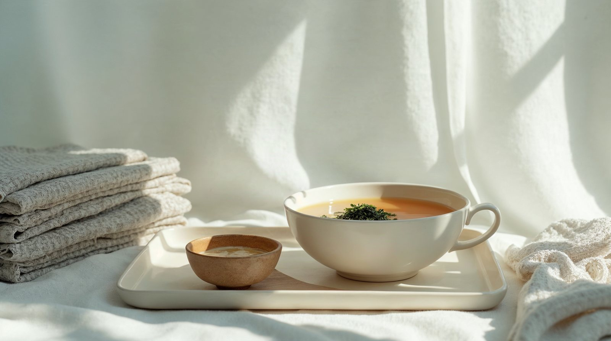
출산 뒤 우울감과 불안이 몇 주째 이어질 때(산후 우울)는 어떻게 살피나요?
출산 뒤 며칠 눈물이 나는 산후 기분 저하와, 2주 넘게 우울·불안·무기력이 이어지는 산후 우울은 다릅니다. 잠·식사·몸의 회복을 함께 살피고, 정신건강의학과·산부인과 진료와 나란히 갑니다.
수정 2026-11-26
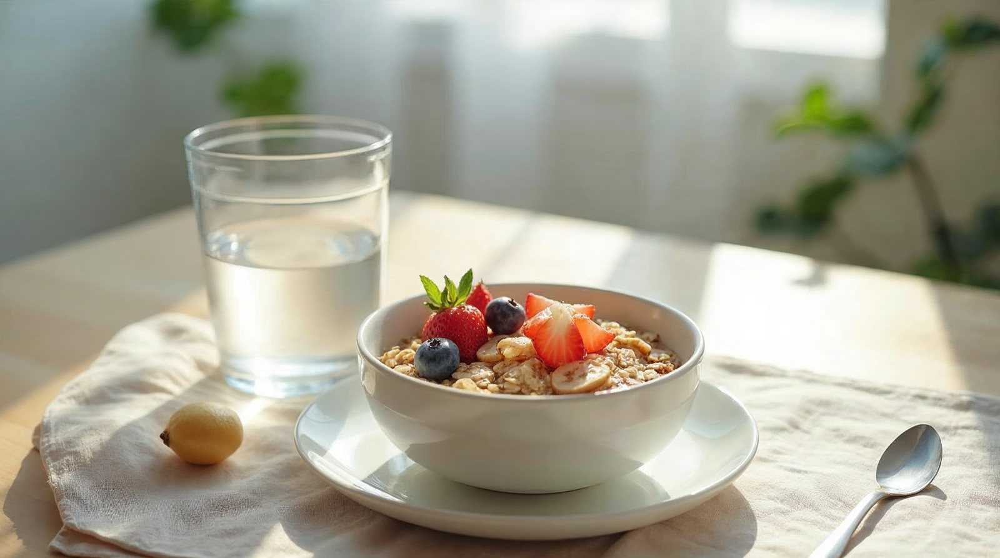
출산 뒤 변을 보기가 두렵고 치질까지 생겼을 때(산후 변비·치질)는 어떻게 살피나요?
출산 뒤에는 회음부 통증과 늘어진 장, 철분제, 부족한 물과 잠 때문에 변비가 생기고 치질이 함께 불편해지기 쉽습니다. 변을 덜 무섭게 보는 자세와 식사, 좌욕, 한의원에서 함께 살피는 부분을 정리했습니다.
수정 2026-11-26
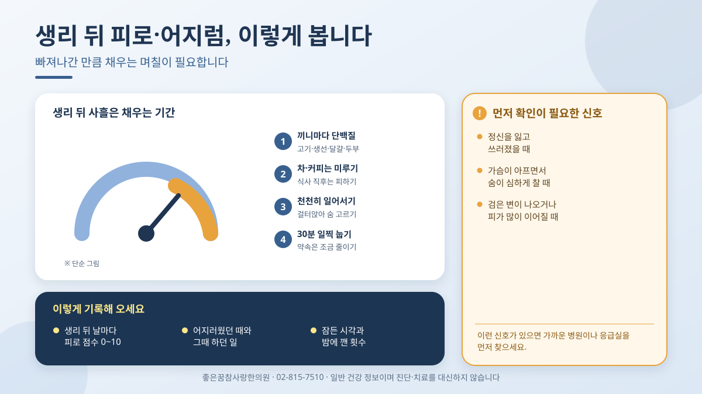
생리가 끝난 뒤에도 며칠씩 피곤하고 어지러울 때는 무엇을 살피나요?
생리가 끝나면 가벼워질 줄 알았는데 오히려 며칠씩 기운이 없고 일어설 때 핑 돈다면, 빠져나간 만큼 채우는 시간이 필요하다는 신호일 수 있습니다. 빈혈 확인과 함께 한의원에서 무엇을 살피는지 정리했습니다.
수정 2026-11-26
생리 주기가 짧아 한 달에 두 번 생리를 할 때(빈발월경)는 무엇을 확인하고 어떻게 살피나요?
생리가 끝났나 싶으면 다시 시작해 한 달에 두 번 하게 될 때, 정말 주기가 짧아진 것인지 생리 사이 출혈인지부터 나눠 봐야 합니다. 산부인과 확인과 함께 한의원에서 잠·피로·몸의 온기를 어떻게 살피는지 정리했습니다.
수정 2026-11-26

생리 때마다 배가 묽어지고 설사·배탈이 반복될 때는 무엇을 살피나요?
생리가 시작되면 배가 살살 아프고 화장실을 여러 번 찾는 분이 많습니다. 생리와 장이 함께 흔들리는 이유, 과민성 장과 구분할 점, 생리 전후 식사와 배 관리, 한의원에서 함께 살피는 부분을 정리했습니다.
수정 2026-11-26

다낭성 난소 증후군이 있을 때 체중 관리는 왜 어렵고, 무엇부터 바꿔 보나요?
다낭성 난소 증후군이 있으면 남들과 같이 먹고 움직여도 살이 잘 빠지지 않아 지치기 쉽습니다. 인슐린과 체중의 관계, 굶지 않는 식사 순서, 움직임과 잠, 산부인과와 함께 가는 순서를 정리했습니다.
수정 2026-11-26
다낭성 난소 증후군이 있을 때 생활과 생리 주기는 어떻게 살피나요?
다낭성 난소 증후군은 산부인과 진단과 치료가 기준이고, 한의원에서는 체중·혈당·잠·대변 리듬을 함께 살핍니다. 석 달 넘게 생리가 없거나 출혈이 비정상이면 산부인과 확인이 먼저입니다.
수정 2026-11-26
배란통과 배란기 출혈, 생리 사이 아랫배 통증과 피 비침은 어떻게 살피나요?
생리 사이 한쪽 아랫배 통증이나 소량의 피 비침은 배란과 관련된 경우가 많지만, 다른 원인과 구분하려면 시기와 양을 기록하는 것이 먼저입니다. 반복되면 산부인과 확인과 함께 몸의 흐름을 살핍니다.
수정 2026-11-26

난소에 물혹(난소 낭종)이 있다는 말을 들은 뒤에는 무엇을 확인하고 어떻게 살피나요?
난소 물혹은 배란과 함께 생겼다 사라지는 기능성 낭종부터 자궁내막종, 기형종까지 종류가 다양합니다. 산부인과 추적 검사 일정을 지키면서 생리 흐름, 아랫배 불편, 잠과 긴장을 한의원에서 어떻게 함께 살피는지 정리했습니다.
수정 2026-11-26

생리통이 심할 때 한의원에서는 무엇을 먼저 묻고, 언제 병원 검사가 필요한가요?
생리통은 통증이 시작되는 때와 세기, 진통제 쓰는 법, 몸의 온기·소화·잠을 두세 주기 기록과 함께 살핍니다. 갑자기 심해진 통증, 생리 때가 아닌 골반 통증, 늘어난 생리량은 산부인과 확인이 먼저입니다.
수정 2026-11-26

생리혈에 덩어리가 많이 나올 때는 무엇을 확인하고 어떻게 살피나요?
생리 첫날이나 양이 많은 날 검붉은 덩어리가 자꾸 나오면 걱정이 앞섭니다. 덩어리의 크기와 양, 통증을 어떻게 살피고 무엇을 확인해야 하는지, 산부인과 확인과 함께 한의원에서 어떻게 살피는지 정리했습니다.
수정 2026-11-26

갱년기에 몸이 달라질 때 한의원에서는 무엇을 먼저 묻나요?
갱년기에는 열감·식은땀·잠·기분·관절이 한꺼번에 흔들리기 쉬워, 가장 힘든 것부터 차례를 정하고 몸 전체의 리듬에서 살핍니다. 호르몬 치료는 산부인과와 상의하고, 폐경 뒤 출혈은 산부인과 확인이 먼저입니다.
수정 2026-11-26
갱년기 무렵 아침마다 손가락이 뻣뻣하고 마디마디가 쑤실 때는 어떻게 살피나요?
갱년기 무렵에는 아침에 손가락이 뻣뻣하고 손목·무릎·어깨가 쑤시는 분이 많습니다. 여성호르몬 변화와 관절 통증의 관계, 류마티스 관절염·손가락 관절염과 나눠 보는 법, 생활에서 살필 것을 정리했습니다.
수정 2026-11-26
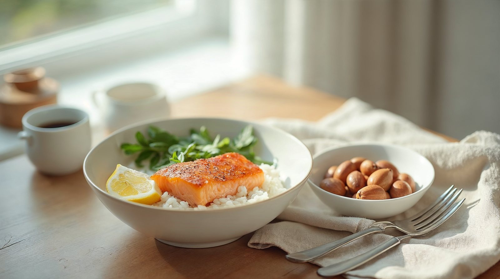
임신 준비 중 남편 쪽 정액 검사 결과가 걱정될 때(남성 난임)는 무엇을 살피고 준비하나요?
난임의 원인은 남성 쪽에도 상당 부분 있습니다. 정액 검사와 진단은 비뇨의학과와 상의하고, 정자가 만들어지는 약 3개월 동안의 잠·술·담배·열·체중·운동을 부부가 함께 점검합니다.
수정 2026-11-26

모유량이 부족한 것 같아 걱정될 때는 무엇을 먼저 확인하고, 엄마의 몸은 어떻게 살피나요?
젖이 부족한 것 같다는 걱정은 수유하는 엄마들이 가장 많이 하는 고민입니다. 실제로 부족한지 아기의 신호로 확인하는 법, 모유량에 영향을 주는 이유, 엄마의 잠과 식사, 한의원에서 함께 살필 수 있는 부분을 정리했습니다.
수정 2026-11-26

난소 기능 저하(AMH 수치가 낮다)는 말을 들었을 때 임신 준비와 생활은 어떻게 살피나요?
AMH는 난소에 남은 난포의 양을 짐작하는 수치일 뿐, 임신 가능성을 홀로 정하지는 않습니다. 난임 클리닉과 계획을 세우면서 잠·식사·체중·흡연·마음의 무게를 한의원에서 어떻게 함께 살피는지 정리했습니다.
수정 2026-11-26
임신 후기에 갈비뼈 아래가 뻐근하고 아파 앉아 있기 힘들 때는 무엇을 살피고 어떻게 지내나요?
임신 후기에는 커진 자궁과 아기의 발길질, 벌어지는 갈비뼈 때문에 갈비뼈 아래가 뻐근하고 아픈 일이 흔합니다. 흔한 통증과 확인이 필요한 윗배 통증을 나누는 법, 자세와 숨쉬기, 한의원에서 함께 살피는 부분을 정리했습니다.
수정 2026-11-26

시험관 시술을 받는 동안 몸 관리는 어떻게 하고, 한의원 진료는 어떻게 함께 상의하나요?
시험관 시술 기간에는 주사와 채취, 이식, 기다림이 이어지며 잠과 식사, 마음이 함께 흔들립니다. 난임 병원 일정을 중심에 두고 생활 리듬과 한의원 진료를 어떻게 나란히 상의하는지 정리했습니다.
수정 2026-11-26

피임약을 끊은 뒤 생리가 늦어지거나 주기가 불규칙할 때는 무엇을 살피나요?
경구 피임약을 끊고 나서 생리가 한참 늦거나 주기가 들쭉날쭉할 때, 몸이 스스로 리듬을 되찾는 과정과 먼저 확인할 점, 산부인과와 함께 볼 부분, 한의원에서 살피는 생활 리듬을 정리했습니다.
수정 2026-11-26
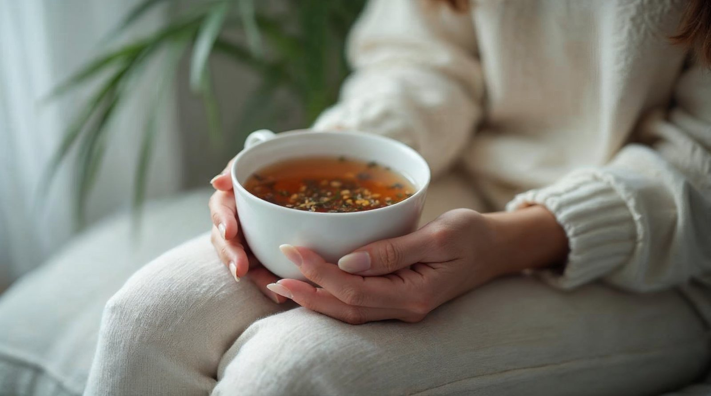
월경 주기가 불규칙할 때 한의원에서는 무엇을 먼저 확인하나요?
월경 주기가 들쭉날쭉하면 임신 가능성, 최근 체중·잠·스트레스 변화, 복용 약부터 확인합니다. 석 달 넘게 월경이 없거나 월경이 아닌 때 출혈, 매우 많은 출혈은 산부인과 검사가 먼저입니다.
수정 2026-11-26

소변 검사는 깨끗한데 방광이 아프고 자꾸 마려운 간질성 방광염(방광통증증후군)은 어떻게 살피나요?
균은 나오지 않는데 방광이 차오를수록 아랫배가 아프고 소변이 자주 마려운 간질성 방광염은 오래 이어지기 쉽습니다. 일반 방광염과의 차이, 음식과 방광 습관, 골반 근육과 긴장을 함께 살피는 법을 정리했습니다.
수정 2026-11-26

자궁 적출 수술을 받은 뒤 몸 회복은 무엇을 살피고, 생활은 어떻게 하나요?
자궁 적출 수술 뒤에는 상처 회복뿐 아니라 체력, 배변과 소변, 잠, 마음까지 함께 흔들리기 쉽습니다. 수술 병원의 안내를 지키면서 회복기 생활을 어떻게 챙기는지, 한의원에서 함께 살필 수 있는 부분을 정리했습니다.
수정 2026-11-26

생리 양이 눈에 띄게 줄어든 과소월경은 무엇을 확인하고 어떻게 살피나요?
예전보다 생리 양이 확 줄고 하루 이틀 만에 끝나는 과소월경은 임신 가능성, 호르몬 약, 갑상선, 체중 변화, 자궁 안 유착 등을 확인합니다. 산부인과 확인과 함께 잠·식사·몸의 온도를 한의원에서 어떻게 살피는지 정리했습니다.
수정 2026-11-26
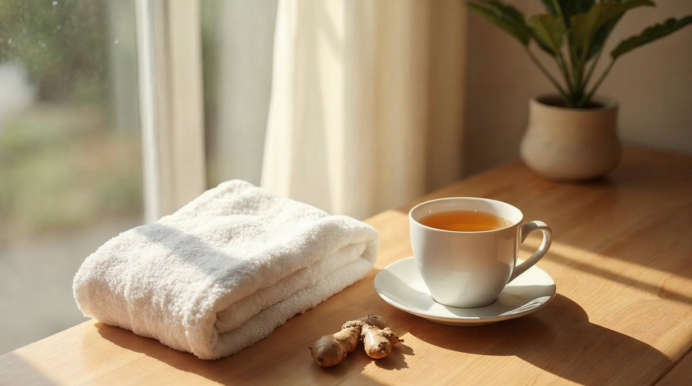
암 치료로 호르몬 치료를 받으며 열감·땀·잠 문제처럼 갱년기 같은 증상이 생길 때는 어떻게 살피나요?
암 호르몬 치료 중에는 열감, 땀, 잠 문제, 관절 뻣뻣함 같은 갱년기 비슷한 증상이 생길 수 있습니다. 한의원은 암을 치료하지 않으며 담당 종양 전문의의 판단이 먼저입니다. 일상 관리와 동의된 범위의 진료를 정리했습니다.
수정 2026-11-26
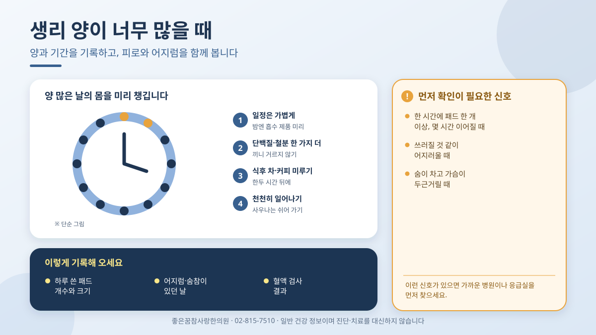
생리 양이 너무 많을 때(월경과다)는 무엇을 확인하고 어떻게 살피나요?
한두 시간마다 패드를 갈거나 큰 핏덩어리가 나오고 생리가 7일 넘게 이어지면 월경과다일 수 있어 산부인과에서 원인과 빈혈을 먼저 확인합니다. 한의원에서는 그 결과를 바탕으로 피로·잠·소화·몸의 온도를 함께 살핍니다.
수정 2026-11-26
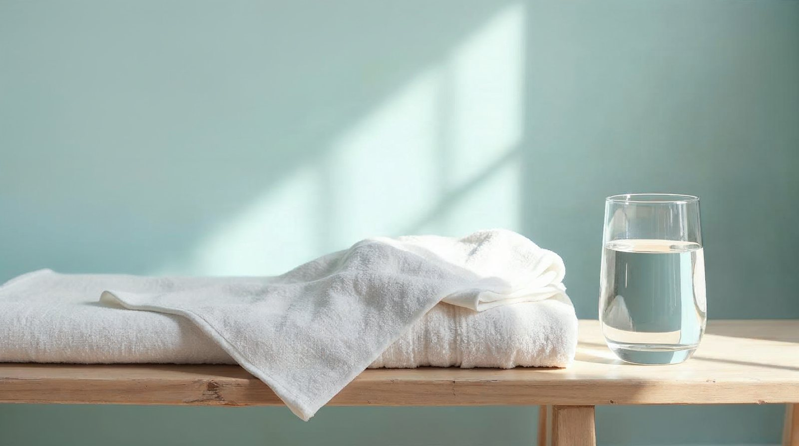
질염 검사는 괜찮다는데 냉(대하)이 많아 신경 쓰일 때는 무엇을 살피나요?
검사에서 균은 없다는데 속옷이 자주 젖을 만큼 냉이 많으면 하루 종일 신경이 쓰입니다. 정상 냉의 흐름과 양이 늘어나는 이유, 씻는 습관과 옷차림, 몸의 차가움과 피로를 함께 살피는 법을 정리했습니다.
수정 2026-11-26
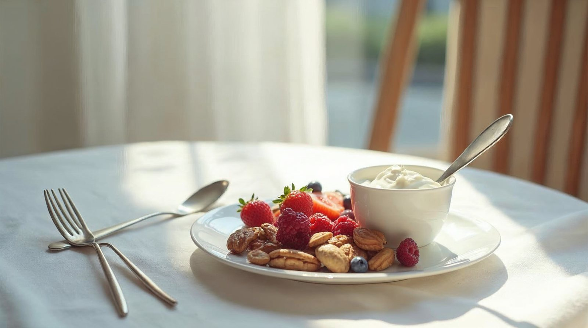
임신성 당뇨라는 말을 들었을 때 식사와 걷기, 혈당 기록은 어떻게 꾸리나요?
임신 중기 검사에서 임신성 당뇨라는 말을 들으면 먹는 것 하나하나가 걱정스러워집니다. 산부인과 관리를 기본으로 하면서 식사 나누기, 식후 걷기, 혈당 기록과 잠은 어떻게 꾸리는지, 한의원에서는 무엇을 함께 살피는지 정리했습니다.
수정 2026-11-26

아랫배와 골반 통증이 몇 달째 이어지는 여성 만성 골반통은 어떻게 살피나요?
검사를 받아도 뚜렷한 답이 없는데 아랫배와 골반 깊은 곳이 몇 달째 묵직하고 아프면 지치기 쉽습니다. 만성 골반통의 여러 원인과 확인 순서, 근육·장·방광·마음의 연결, 일상 관리와 한의원에서 함께 살피는 부분을 정리했습니다.
수정 2026-11-26

자궁내막증이 있다고 들었을 때, 생리통과 골반 통증은 어떻게 함께 살피나요?
자궁내막증은 산부인과 진단과 추적이 기준이고, 한의원에서는 생리통·골반 통증·배변통·피로·잠을 함께 살핍니다. 처방받은 호르몬 치료는 그대로 이어 가며 그사이의 하루를 함께 돌봅니다.
수정 2026-11-26
임신 초기에 하루 종일 졸리고 몸이 천근만근 피곤할 때는 무엇을 살피고 어떻게 지내나요?
임신 초기에는 호르몬 변화와 혈액량 증가, 입덧, 마음의 긴장이 겹쳐 낮에도 쏟아지는 졸음과 무거운 피로가 흔합니다. 흔한 피로와 더 살필 피로를 나누는 법, 생활 요령과 한의원에서 함께 살피는 부분을 정리했습니다.
수정 2026-11-26
40대 초반에 생리가 줄고 띄엄띄엄해져 이른 폐경이 걱정될 때는 무엇을 확인하나요?
40대 초반인데 생리 양이 줄고 주기가 길어지며 열감까지 생기면 벌써 폐경인가 싶어 마음이 무거워집니다. 이른 폐경과 조기 난소 기능 저하의 차이, 산부인과에서 확인할 것, 뼈와 혈관, 잠과 마음을 돌보는 법을 정리했습니다.
수정 2026-11-26

부부 관계 때 아픈 성교통은 왜 생기고, 어디서부터 어떻게 상의하나요?
관계 때 입구가 따갑거나 깊은 곳이 묵직하게 아픈 성교통은 건조함, 염증, 골반 근육 긴장, 자궁내막증 등 여러 갈래가 얽혀 있습니다. 산부인과 확인과 함께 몸의 긴장과 잠, 마음을 한의원에서 어떻게 살피는지 정리했습니다.
수정 2026-11-26

생리 전마다 가슴이 붓고 아픈 유방통은 어떻게 살피고, 언제 검사를 받아야 하나요?
생리 전마다 가슴이 붓고 욱신거리는 유방통은 주기를 따라 오르내리는 경우가 많습니다. 주기성 통증과 따로 확인할 멍울을 구분하는 법, 생활 관리와 한의원에서 함께 살피는 점을 정리했습니다.
수정 2026-11-26
손발이 찬 수족냉증, 레이노·갑상선·빈혈과 어떻게 구분하나요?
손발이 찰 때는 생리 주기와 아랫배 냉감, 잠과 소화를 함께 봅니다. 손가락 색이 하얗게·파랗게 변하거나 피로·체중 변화가 함께 오면 레이노 현상·갑상선·빈혈 확인이 먼저입니다.
수정 2026-11-26
제왕절개로 출산한 뒤 몸 회복은 무엇부터 살피고, 생활은 어떻게 하나요?
제왕절개 뒤에는 출산 회복과 배 수술 회복이 함께 겹칩니다. 상처와 배 힘, 허리, 잠, 장 움직임을 어떤 순서로 살피는지, 산부인과 진료와 나란히 한의원에서 무엇을 함께 볼 수 있는지 정리했습니다.
수정 2026-11-26
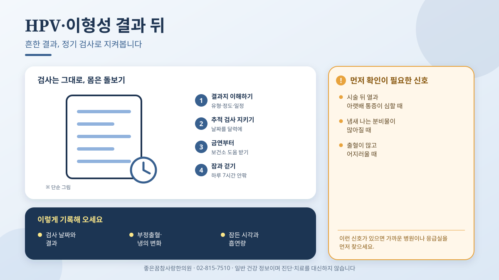
자궁경부 이형성이나 HPV 양성 결과를 받고 걱정될 때는 무엇을 살피나요?
HPV 양성이나 자궁경부 이형성 결과는 흔하고, 상당수는 정해진 간격의 추적 검사로 지켜봅니다. 산부인과 검사 일정과 치료를 그대로 따르면서 잠·피로·흡연·마음의 불안을 한의원에서 어떻게 함께 살피는지 정리했습니다.
수정 2026-11-26

임신 중 역아(아기가 거꾸로 있다)라는 말을 들었을 때는 무엇을 알아 두고 어떻게 지내나요?
정기 검진에서 아기가 거꾸로 있다는 말을 들으면 마음이 먼저 철렁합니다. 역아가 어떤 상태인지, 왜 생기는지, 산부인과 판단이 먼저인 이유와 한의원에서 함께 살필 수 있는 몸의 불편을 차분히 정리했습니다.
수정 2026-11-26
수유 중 가슴이 딱딱하게 붓고 아픈 젖몸살은 어떻게 살피고, 언제 진료를 먼저 받나요?
수유 중 가슴이 돌처럼 단단해지고 화끈거리면 아기를 안는 것조차 겁이 납니다. 젖몸살과 젖이 막힌 멍울, 유선염은 어떻게 다른지, 집에서 해 볼 수 있는 것과 산부인과·한의원에서 함께 살피는 부분을 정리했습니다.
수정 2026-11-26
유방에 멍울이 만져지거나 섬유선종이라는 말을 들었을 때는 무엇을 확인하고 어떻게 살피나요?
유방 멍울은 생리 주기에 따른 섬유낭성 변화, 섬유선종, 낭종처럼 양성인 경우가 많지만 먼저 유방 외과 초음파로 확인합니다. 추적 검사 일정을 지키면서 생리 흐름과 긴장, 잠을 한의원에서 어떻게 살피는지 정리했습니다.
수정 2026-11-26
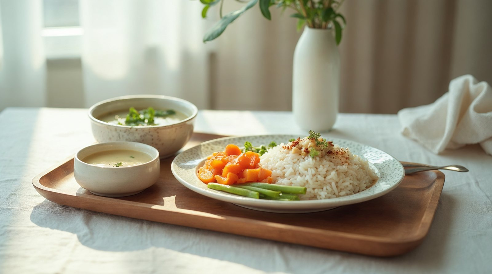
생리가 몇 달째 없을 때(무월경)는 무엇을 먼저 확인하고 어떻게 살피나요?
생리가 석 달 넘게 없다면 임신 여부와 호르몬·갑상선·체중 변화를 먼저 산부인과에서 확인합니다. 한의원에서는 그 결과를 바탕으로 잠·식사·체중·스트레스·몸의 온도를 함께 살핍니다.
수정 2026-11-26
유산을 겪은 뒤 몸과 마음의 회복, 다음 임신 준비는 어떻게 살피나요?
유산 뒤에는 출혈과 생리 회복, 잠과 식사, 마음의 상처를 함께 살펴야 합니다. 다음 임신 시기와 검사는 산부인과와 상의하고, 한의원에서는 생리 흐름과 몸의 회복을 함께 돌봅니다.
수정 2026-11-26

생리가 아닌 때에 피가 비치는 부정출혈이 걱정될 때는 무엇부터 확인하나요?
생리가 끝난 지 얼마 안 됐는데 속옷에 피가 비치면 덜컥 겁이 납니다. 부정출혈의 흔한 이유와 산부인과 검사가 먼저인 경우, 진료 전에 적어 둘 것, 검사 뒤 한의원에서 함께 살필 수 있는 부분을 차분히 정리했습니다.
수정 2026-11-26

연말에 바쁘게 지낸 뒤 생리가 늦어질 때는 어떻게 살피나요?
야근과 모임으로 잠과 식사가 흐트러진 달에는 생리 주기가 늦어지는 분이 있어, 임신 가능성과 최근 생활의 변화를 먼저 묻고 주기 기록과 잠부터 함께 정리합니다.
수정 2026-11-25

임신을 준비하는 부부가 둘 다 야근이 잦을 때 생활 리듬은 어떻게 맞추나요?
임신을 준비하는 부부가 둘 다 야근이 잦다면 일주일에 두세 번은 같은 시각에 잠자리에 들고 저녁은 늦어도 밤 9시 전에 간단히 먹는 것부터 맞춰 보시기를 권하며, 임신 관련 검사와 진단은 산부인과 진료가 함께 필요합니다.
수정 2026-11-24
출산 후 유모차를 밀고 언덕길을 다니면 골반이 묵직하고 쉽게 지칠 때는 어떻게 살피나요?
출산 후 몸이 회복되는 시기에 유모차를 밀고 오르막을 자주 오르면 골반과 허리에 부담이 쌓이고 쉽게 지칠 수 있어, 출산 후 시기와 잠, 불편한 동작을 먼저 묻고 무리를 줄이는 방법을 함께 정리합니다.
수정 2026-11-24

출산 뒤 유모차를 밀고 언덕길을 오르내릴 때 손목과 허리가 뻐근하면 어떻게 하나요?
출산 뒤 유모차로 언덕길을 오르내리면 오르막에서는 허리를 숙여 밀고 내리막에서는 손목으로 버티게 되어 손목과 허리에 부담이 쌓일 수 있습니다. 산책 길과 손잡이 높이, 아기를 안는 자세를 먼저 여쭙고 함께 조정합니다.
수정 2026-11-24

출산 뒤 마음이 가라앉고 눈물이 날 때는 어떻게 살피나요?
출산 뒤 마음이 가라앉고 눈물이 나는 것은 흔한 반응일 수 있어 잠과 도움 받을 사람을 함께 묻고, 2주 넘게 이어지거나 아기를 돌보기 어려우면 산부인과·정신건강의학과 진료를, 스스로를 해치거나 아기를 해칠 것 같은 생각이 들면 지체 없이 109나 가까운 응급실을 권합니다.
수정 2026-11-26

생리통이 심한 날 출근길 지하철에서 서서 가기 힘들 때는 어떻게 준비하나요?
생리 첫날 아랫배 통증과 어지럼이 출퇴근길과 겹치면 서서 가기 힘들 수 있어, 통증이 심한 날과 시간, 진통제 복용 습관, 생리량을 먼저 묻고 출근 전에 미리 준비할 수 있는 방법을 함께 정리합니다.
수정 2026-11-24
갱년기 무렵 갑자기 가슴이 두근거릴 때는 어떻게 살피나요?
갱년기 무렵 갑자기 가슴이 두근거린다면 먼저 내과나 심장 검사로 심장 문제를 확인하는 것이 순서이며, 생활에서는 두근거림이 생긴 시각과 상황을 기록하고 오후 카페인을 줄이며 천천히 내쉬는 호흡을 해 보시기를 권합니다.
수정 2026-11-24

갱년기 무렵 눈·입·피부가 부쩍 건조해졌을 때는 무엇을 살피나요?
갱년기 무렵 눈·입·피부가 부쩍 건조해졌다면 물을 하루 여러 번 나눠 마시고 실내 습도를 맞추며 샤워 뒤 바로 보습하는 것부터 해 보고, 복용 중인 약과 잠 상태도 함께 살펴보시기를 권합니다.
수정 2026-11-24
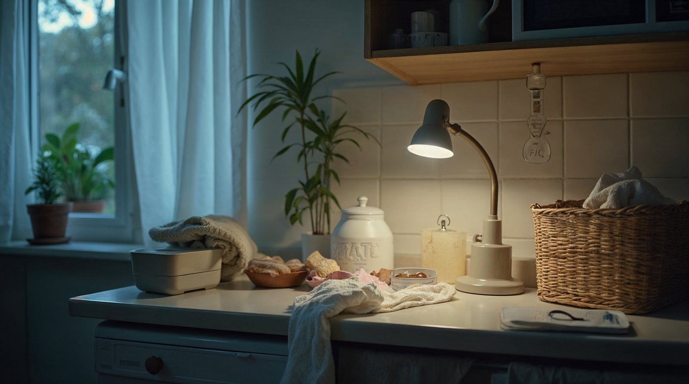
일과 육아를 함께 하며 늘 지쳐 있을 때는 무엇부터 살피나요?
일과 육아를 함께 하며 늘 지쳐 있다면 하루 일과와 잠, 식사, 몸의 아픈 곳을 먼저 묻고 작게 쉴 틈을 함께 찾으며, 빈혈이나 갑상선처럼 확인이 필요한 원인이 없는지도 살핍니다.
수정 2026-11-24

생리 중에도 한의원 진료를 받을 수 있나요?
생리 기간에도 한의원 진료를 받을 수 있으며, 생리 시작일과 양, 통증 정도를 미리 알려 주시면 그날 컨디션에 맞춰 진료 방법과 자세를 정하는 데 도움이 됩니다.
수정 2026-11-25

생리 전 일주일마다 예민해지고 짜증이 늘 때는 어떻게 살피나요?
생리 전 일주일마다 예민해지고 짜증이 는다면 증상이 시작되는 시점과 생리 뒤 사라지는지, 붓기·단 음식 당김·잠의 변화를 두세 달 기록해 함께 보고, 일상이 무너질 정도면 부인과 상담을 함께 권합니다.
수정 2026-11-25

임신 중이거나 임신 가능성이 있을 때는 한의원에 무엇을 알려야 하나요?
임신 중이거나 임신 가능성이 있다면 접수와 진료 시작 때 먼저 알려 주셔야 하며, 마지막 생리 시작일과 복용 중인 약, 산부인과에서 들은 주의 사항을 함께 말씀해 주시면 진료 방법을 안전하게 정할 수 있습니다.
수정 2026-11-25

임신을 준비하는 부부는 생활에서 무엇부터 함께 점검하나요?
임신을 준비하는 부부는 두 사람의 잠과 근무 형태, 식사, 음주·흡연, 복용 중인 약과 검사 결과를 함께 점검하는 것부터 시작하며, 1년(35세 이상은 6개월) 넘게 임신이 되지 않으면 검사를 함께 권합니다.
수정 2026-11-24

출산 뒤 아기를 안다가 손목과 손가락이 아플 때는 어떻게 하나요?
출산 뒤 아기를 안고 수유하며 손목과 엄지 쪽이 아프면 아픈 동작과 시간대, 안는 자세를 먼저 묻고 수유 중인지 확인한 뒤 방법을 정하며, 출산 뒤 기분이 깊이 가라앉는 날이 이어지면 함께 살핍니다.
수정 2026-11-24

폐경 뒤 뼈 건강은 생활에서 무엇을 챙기면 좋을까요?
폐경 뒤에는 뼈가 약해지기 쉬워 골밀도 검사와 칼슘·비타민 D 섭취, 체중을 싣는 운동, 넘어짐 예방을 챙기며 키가 줄거나 넘어진 뒤 허리가 아프면 병원 검사를 먼저 권하고 골다공증 약은 임의로 중단하지 않습니다.
수정 2026-11-26
갱년기에 밤마다 땀에 젖어 깨는 날이 많을 때는 어떻게 하나요?
갱년기에 밤마다 땀에 젖어 깬다면 땀이 나는 시각과 횟수, 침실 환경, 낮의 열감과 기분 변화를 먼저 묻고 잠과 열감을 함께 살피며, 열이나 체중 감소가 있으면 다른 원인 확인을 먼저 안내합니다.
수정 2026-11-25

체중이 갑자기 늘거나 줄고 나서 생리 주기가 불규칙해졌을 때는 어떻게 하나요?
짧은 기간에 체중이 크게 늘거나 준 뒤 생리 주기가 흔들리면 먼저 임신 가능성을 확인하고, 체중 변화의 속도와 식사·운동·잠·스트레스를 살피며, 석 달 이상 생리가 없으면 부인과 검사를 함께 권합니다.
수정 2026-11-25

소변이 자주 마렵고 아랫배가 불편한 느낌이 자꾸 반복될 때는 어떻게 하나요?
잔뇨감과 빈뇨, 아랫배 불편이 반복되면 먼저 소변 검사로 염증 여부를 확인하는 것이 우선이며, 검사에서 큰 이상이 없는데도 불편이 이어지면 몸의 온기와 피로, 잠, 긴장을 함께 살핍니다.
수정 2026-11-26
생리 때마다 아랫배가 차고 묵직할 때는 무엇을 먼저 살피나요?
생리 때마다 아랫배가 차고 묵직하면 통증이 며칠째 가장 심한지, 따뜻하게 하면 편해지는지, 생리량과 손발의 온기를 먼저 묻고, 해마다 심해지는 생리통은 부인과 검사를 함께 권합니다.
수정 2026-11-26

얼굴이 달아오르고 땀이 갑자기 날 때는 어떤 점을 살펴보나요?
낮에 갑자기 얼굴이 달아오르고 땀이 나면 나이와 생리 주기 변화, 잠, 카페인과 스트레스를 함께 여쭙고, 체중 감소나 생리가 아닌 출혈은 병원 검사를, 가슴 통증이나 심한 두근거림은 가까운 응급실을 먼저 권합니다.
수정 2026-11-26

겨울에 손발이 유난히 찰 때는 한의원에서 무엇을 살펴보나요?
겨울에 손발이 유난히 차면 체온 변화와 잠, 식사, 생리 주기를 함께 여쭙고 생활 리듬부터 살피며, 손가락 색이 하얗게 또는 파랗게 변하거나 한쪽만 차고 저리면 병원 확인을 먼저 권합니다.
수정 2026-11-26